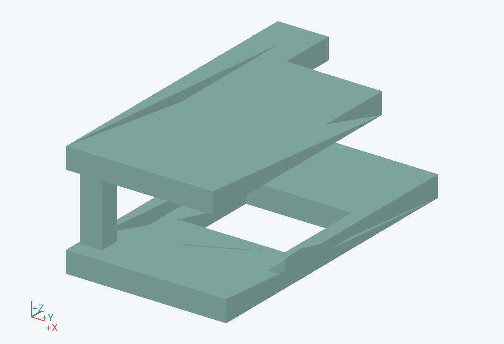
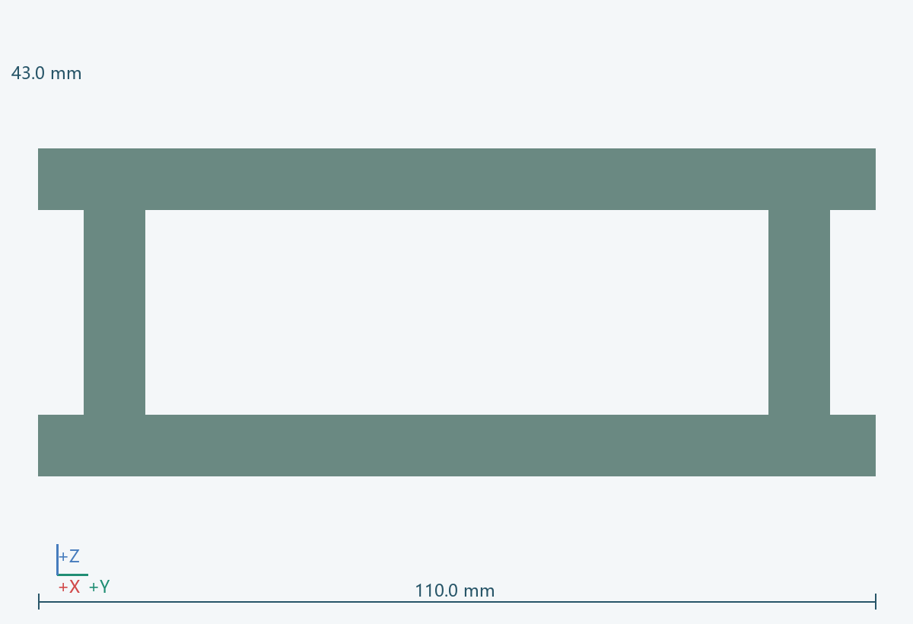
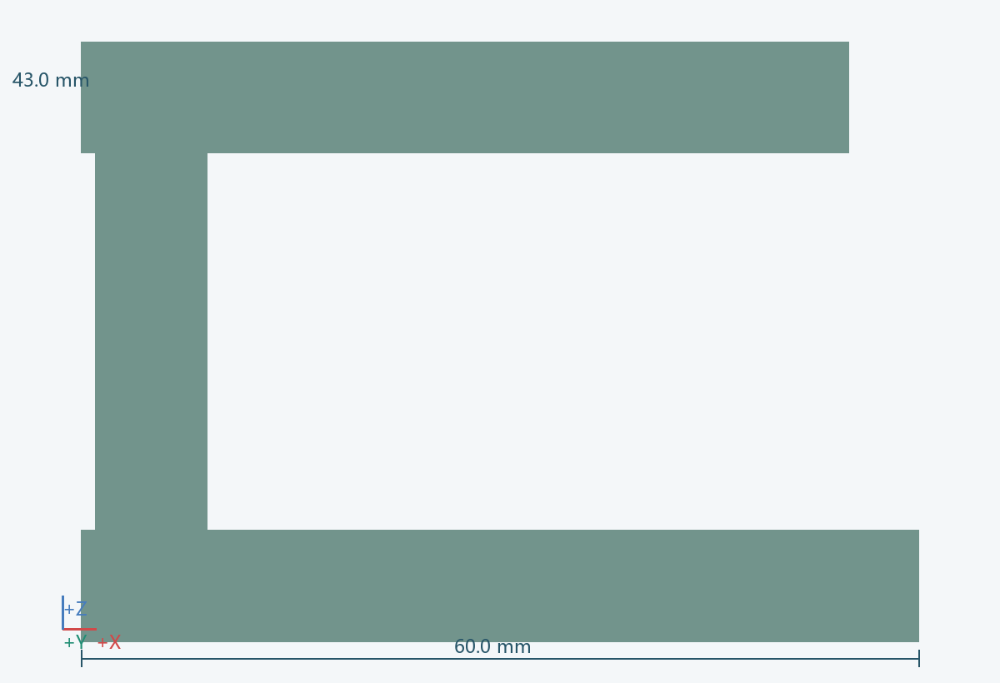

几何包络
60.0 × 110.0 × 43.0 mm（含所示实例）
功能
将导球套提升到允许托架前移的位置。
连接 / 基准
固定在 0602、移动端连接 0606；配置上、下位置反馈。
材料 / 工艺
小型线性驱动及导向轨
拆装
从筒架后侧拆出。
待验证
导套上位未确认时，托架及转向均不得运动；断电/卡阻停留状态需定义。 关联：U04/U09
实例
PRT-0607-C



60.0 × 110.0 × 43.0 mm（含所示实例）
将导球套提升到允许托架前移的位置。
固定在 0602、移动端连接 0606；配置上、下位置反馈。
小型线性驱动及导向轨
从筒架后侧拆出。
导套上位未确认时，托架及转向均不得运动；断电/卡阻停留状态需定义。 关联：U04/U09
PRT-0607-C